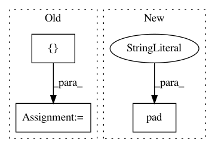

2ee8ac1546400645908b61ef015cdf5d71aa34cc,utils/datasets.py,,pad_to_square,#,20
Before Change
h, w = image_np.shape[:2]
dim_diff = np.abs(h - w)
pad1, pad2 = dim_diff // 2, dim_diff - dim_diff // 2
new_shape = (max([h, w]), max([h, w]), 3)
padded_image = np.full(new_shape, constant_value, dtype=np.float32)
if h < w:
padded_image[pad1 : pad1 + h, :] = image_np
padding = (0, pad1, 0, pad2)
else:
After Change
// Determine padding
pad = ((pad1, pad2), (0, 0), (0, 0)) if h <= w else ((0, 0), (pad1, pad2), (0, 0))
// Add padding
img = np.pad(img, pad, "constant", constant_values=127.5)
return img, pad
class ImageFolder(Dataset):
In pattern: SUPERPATTERN
Frequency: 3
Non-data size: 3
Instances
Project Name: eriklindernoren/PyTorch-YOLOv3
Commit Name: 2ee8ac1546400645908b61ef015cdf5d71aa34cc
Time: 2019-04-22
Author: eriklindernoren@live.se
File Name: utils/datasets.py
Class Name:
Method Name: pad_to_square
Project Name: librosa/librosa
Commit Name: d7eeac5df67900175d78cb997d36e1185911d3b5
Time: 2015-08-14
Author: brian.mcfee@nyu.edu
File Name: librosa/onset.py
Class Name:
Method Name: onset_strength_multi
Project Name: kevinzakka/recurrent-visual-attention
Commit Name: 520e8fb57b890a7249334d9e90c9ad209d0b849f
Time: 2018-02-10
Author: kevinarmandzakka@gmail.com
File Name: modules.py
Class Name: retina
Method Name: extract_patch